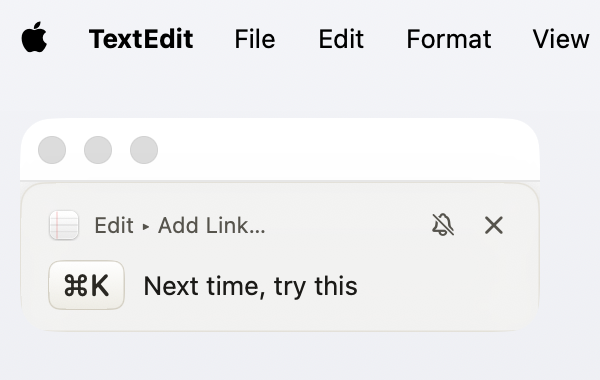
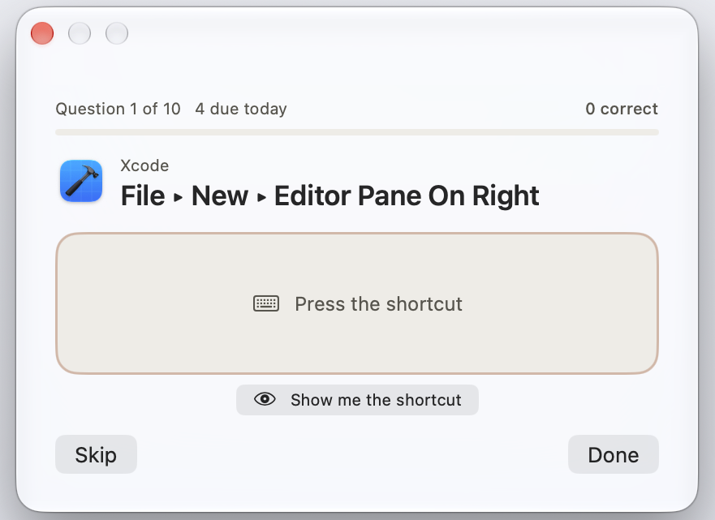
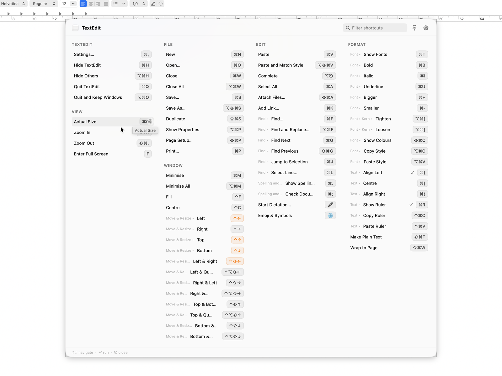
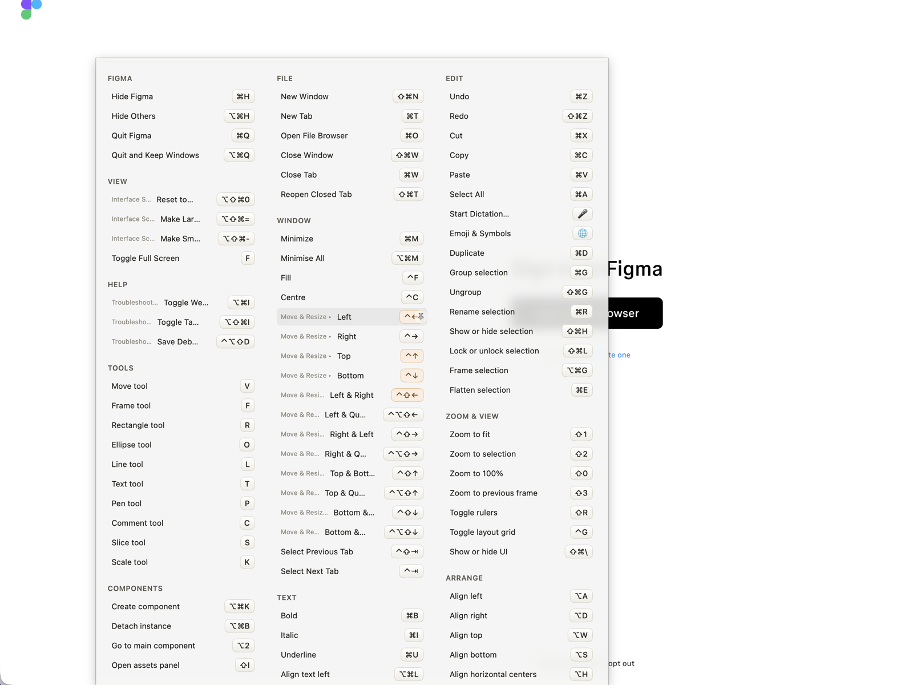

Hold ⌘ and Keysi reads the menus of the app in front, live, and shows every shortcut as a keycap. Click a row to run the command.
or brew install --cask noloman/keysi/keysi
Free, no time limit, no account Includes 14 days of Pro
Hold ⌘ on this page to try it.
CheatSheet did this for years, then broke on macOS
Sonoma and was discontinued. Most people assumed Apple had removed the
API it used. It hadn't. AXUIElementCreateApplication and the
menu-bar attributes are still public, and Keysi is built on them.
More on that, and what's different.
Not affiliated with Media Atelier. Keysi is a new app and shares no code with CheatSheet.
A cheat sheet answers when you ask. Keysi shows the real shortcuts for the app you're in, then keeps at it until you stop reaching for the menu. I built it for the apps people work in all day: Xcode, Logic, Final Cut, Figma, Excel.
Before You dig through three menus for one command, or a list written for last year's version.
With Keysi Free Hold ⌘ and see every shortcut of the app you're in, as its menus are right now, plus the ones you rebound in Xcode, JetBrains IDEs or VS Code. Click a row and it runs.
Before You looked a shortcut up yesterday and used the mouse again today.
With Keysi Pro Coach shows one quiet reminder when you use the menu for a command that has a shortcut. Practice Mode drills the ones you miss until they stick.
Before An update adds commands nobody mentions, and the one you click all day has no shortcut.
With Keysi Pro The overlay marks shortcuts an update added. For a command you keep clicking that has none, Keysi suggests a combination neither the app nor macOS uses, and shows you where to set it.
Before You hope the shortcuts are paying off.
With Keysi Pro Keysi times your trips through the menus and counts the times you pressed the shortcut instead. Until it has timed enough trips, it shows no time figure.
Keylume also nudges you when you use the menu. No other app's site describes Practice drills with spaced repetition, or warnings when macOS or another app takes a shortcut first (checked October 2026). See the dated comparison.
A shortcut reference waits to be asked. Coach doesn't. When you pick a menu command by hand that has a shortcut, it shows one quiet reminder, then stops mentioning the ones you've started using. That's what the $14.99 pays for.
A cooldown keeps it from turning into noise. Mute one shortcut or all of Coach in Settings ▸ Coach, or keep it quiet during a Focus. Practice Mode uses spaced repetition: get one right and it comes back after a day, then two, four, eight and sixteen. Keysi times your real menu trips, so “typically 2.4s, and you've skipped 412 of them” is two numbers it counted, not an estimate.


Click any row and Keysi runs that menu command, then gets out of the way like Spotlight.

Keysi flags any app shortcut that macOS will grab first. Raycast's and Rectangle's hotkeys count too while they're running, and so do Keysi's own; the warning names the app that gets there first. None of this leaves your Mac.
System Shortcuts, in the menu bar, lists every combination macOS claims on your Mac, read from your own settings and grouped like System Settings.

.vimrc, including bindings those apps' menus can't show.keysi terminal command and a keysi:// URL. Showing an app's shortcuts from Raycast, Alfred, the terminal or a URL is free. How each one works.How Keysi compares to KeyCue, KeyClu and CheatSheet. The full table: what each competitor's own site claims, with sources and dates.
See the comparisonComing from one in particular? Keysi as a CheatSheet alternative · Keysi vs KeyCue · KeyClu is free, so why pay?
The whole cheat sheet, not a trial of one.
Everything in this list stays free. I'm still building Keysi, and a new feature may land in either tier, but nothing here moves out.
macOS 14 or later. Drag Keysi into Applications before opening it: macOS ties the Accessibility permission to where the app lives, so a grant made from the disk image doesn't stick.
Or skip the dragging with Homebrew:
brew install --cask noloman/keysi/keysi
Keysi Pro. Pay once, not a subscription.
keysi:// URL, plus Spotlight and the Services menuFor scale: KeyCue is $19.99 a year for the same three devices, per their own pricing page (read 2026-09-11). What KeyCue charges for is the free part of Keysi.
To read the menu bar of the app you're using. The permission prompt says it word for word: "Keysi needs Accessibility access to read the keyboard shortcuts of the app you're using. It never controls your keyboard or mouse without an explicit click on a shortcut row."
Two network calls happen on their own: a license check to Gumroad and an update check against Keysi's Sparkle appcast. With analytics off, the default, nothing about your menus, apps or shortcuts leaves your Mac.
If you turn usage analytics on (in Settings, or on the welcome window's last page), Keysi sends product events to an EU-hosted PostHog instance: app launches, Settings tabs opened, the overlay appearing, the app a shortcut ran in, how setup went, and licensing events such as an upgrade prompt. Never your license key, what you paid, the menus it reads, or even a shortcut's name. Crash diagnostics are off by default too. When on, Apple's MetricKit generates them on your Mac and they stay there unless you share them yourself. Full list on the privacy page.
The Accessibility API Keysi uses to read another app's menus doesn't work in the App Sandbox, and every Mac App Store app must be sandboxed. KeyCue, KeyClu and Keylume are distributed outside the store too, and so was the original CheatSheet.
It's signed with a Developer ID and notarized by Apple, so it opens normally. Sparkle updates are signed with an EdDSA key built into the app and verified before they install. Check the signature yourself:
spctl -a -vvv -t install /Applications/Keysi.app
Yes, in one line:
brew install --cask noloman/keysi/keysi
It's the same signed, notarized DMG as the Download button, pinned by checksum, from Keysi's own tap. Sparkle still handles updates and the cask knows it, so Homebrew won't reinstall over a newer version. Already have Keysi in Applications? Add --adopt.
No. Keysi can see keystrokes while you hold ⌘ but not swallow them, so anything you typed would reach the app underneath too, and I won't install an input tap to change that. Press the global hotkey (⇧⌘K by default) instead: same content, in a panel you can search.
Secure input is on, so macOS hides your typing from every app but the one you're typing into, Keysi included. Password fields and Terminal's Secure Keyboard Entry turn it on. The overlay still works; Shortcut Coach just stops counting the shortcuts you type. Click the lock to see which app turned it on and how to turn it off.
Often it's macOS itself: the login window sometimes leaves it on after you unlock. Lock and unlock your Mac (⌃⌘Q) to clear it.
Keysi keeps working. After the 14 days (and a short grace period) it drops to the free tier: every shortcut still shows, rows still run, custom sheets still load. The coaching stops: reminders, Practice Mode, progress figures and the weekly summary. Nothing you set up is deleted, and Keysi keeps counting locally, so upgrading later picks up where you left off.
Macs: up to 3 at once. To move a license, choose Settings ▸ Keysi Pro ▸ Deactivate This Mac on the old one, then activate the new one with the same key.
Refunds: 30 days, no questions asked. See Terms & refunds.
Updates: free forever. Sparkle checks automatically, or use "Check for Updates…" in the menu bar item.
Usually that's right after it launches, or on its Welcome screen, before it has a real menu bar. Open a document or project and try again.
Electron apps work: Slack, VS Code and Figma all return correct menus. For bindings that never reach an app's menu bar, the built-in custom sheets fill the gap.
Yes. In Settings ▸ Triggers pick ⌘, ⌥, ⌃ or ⇧ and set the hold delay. Keysi warns you about the trade-offs (⌥ also reveals alternate menu items, ⌃ overlaps with secondary click and Full Keyboard Access, ⇧ can trip Slow Keys or Sticky Keys) but lets you choose. The global hotkey (⇧⌘K by default) can be rebound too.